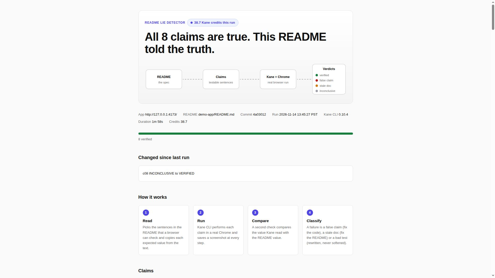
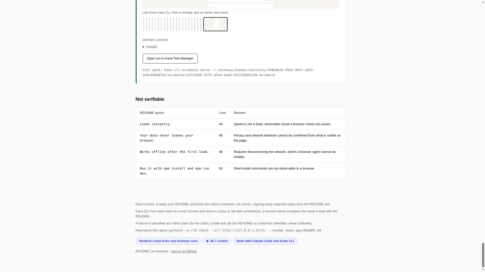
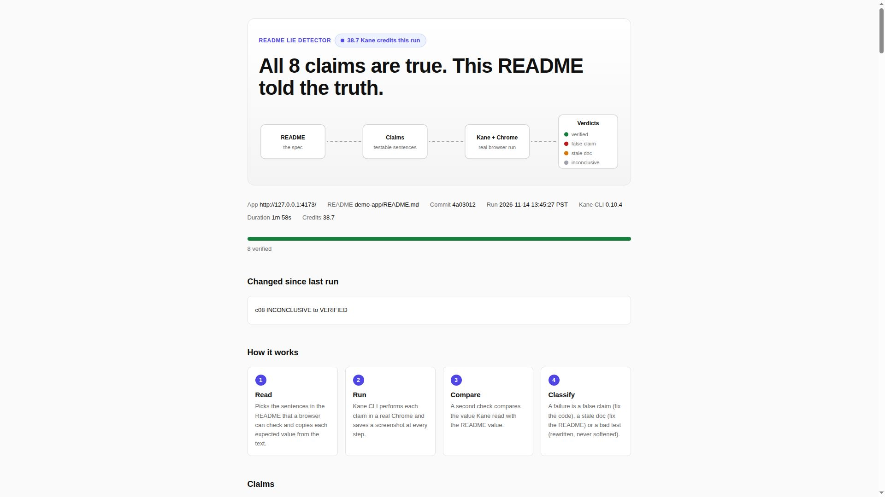
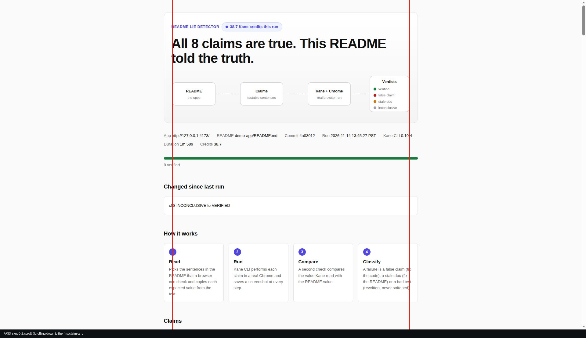
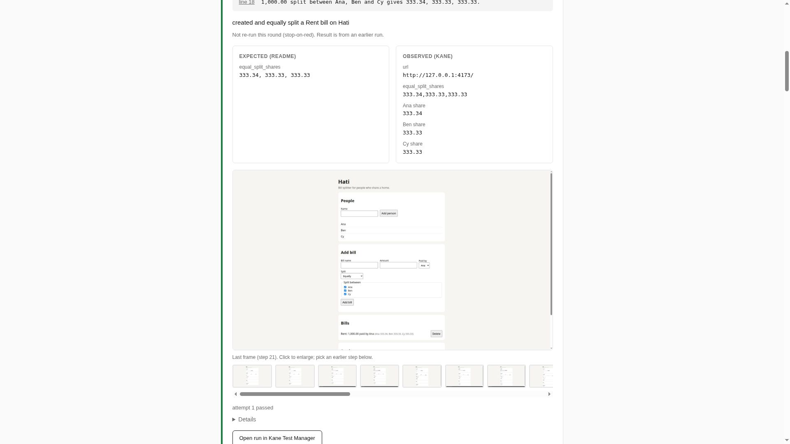

banner_textAll 8 claims are true. This README told the truth.
Last frame (step 5). Click to enlarge; pick an earlier step below.
attempt 1 passed
Details
Objective
Go to https://velu2k03.github.io/readme-lie-detector/. Open https://velu2k03.github.io/readme-lie-detector/ in the browser. Look at the verdict banner at the top of the report page. Assert A verdict banner is shown at the top of the page. Assert The banner says "All 8 claims are true. This README told the truth.". Store The full visible text of the verdict banner at the top of the report page as 'banner_text'.
Summary
Opened the README Lie Detector report page as requested.
Viewed the verdict banner at the top of the page.
The banner reported: “All 8 claims are true. This README told the truth.”
Step remarks
[2 running] Step 1
[2 done] navigate: Navigate to https://velu2k03.github.io/readme-lie-detector/
[3 running] Step 2
[3 done] wait: PRIMARY: verdict banner at the top of the report page; role=heading; text="All 8
[4 running] Step 3
[4 done] analyze: ANALYZE(textual_visual, 'The full visible text of the verdict banner at the top
[5 running] Step 4
[5 done] assert: A verdict banner is shown at the top of the page.
[6 running] Step 5
[6 done] assert: The banner says "All 8 claims are true. This README told the truth.".
Duration 41s · credits 17.3
Open run in Kane Test ManagerFull pack: kane-cli evidence serve ~/.testmuai/kaneai/sessions/2f6a4734-612e-415f-89a2-e96983d44efe/evidence/bb4101dc-0eb4-4520-9d4e-771214629c90.evidence
✓ Verifiedc02
line 64`demo-app/` is Hati, a small bill splitter whose README makes eight testable claims. All eight pass.
counted claim cards on the README Lie Detector report page
Last frame (step 5). Click to enlarge; pick an earlier step below.


attempt 1 passed
Details
Objective
Go to https://velu2k03.github.io/readme-lie-detector/. Open https://velu2k03.github.io/readme-lie-detector/ in the browser. Scroll through the report page and count the separate claim cards. Assert The page shows one card per claim. Assert The number of claim cards is 8. Store The number of separate claim cards on the report page, as a digit as 'claim_card_count'.
Summary
Opened the README Lie Detector report page and reviewed the claim cards throughout the report.
Confirmed that each claim has its own separate card.
Counted 8 claim cards in total.
Step remarks
[2 running] Step 1
[2 done] navigate: Navigate to https://velu2k03.github.io/readme-lie-detector/
[3 running] Step 2
[3 done] scroll: Scrolling through the report page to count separate claim cards
[4 running] Step 3
[4 done] analyze: ANALYZE(textual_visual, 'The number of separate claim cards on the report page,
[5 running] Step 4
[5 done] assert: The page shows one card per claim.
[6 running] Step 5
[6 done] assert: The number of claim cards is 8.
Duration 1m 04s · credits 14.8
Open run in Kane Test ManagerFull pack: kane-cli evidence serve ~/.testmuai/kaneai/sessions/ae664428-d5f5-462b-9c34-c8ebe93c895e/evidence/167b55f9-fcca-4078-887d-2da716543437.evidence
✓ Verifiedc03
line 56Each claim has its own card showing the README line, the README quote, the value the README expected, the value Kane observed, and the screenshots from every step.
reviewed the first claim card on the README Lie Detector site
Last frame (step 7). Click to enlarge; pick an earlier step below.



attempt 1 passed
Details
Objective
Go to https://velu2k03.github.io/readme-lie-detector/. Open https://velu2k03.github.io/readme-lie-detector/ in the browser. Scroll down to the first claim card. Read the first claim card and its verdict label. Assert The card shows a README line number and a README quote. Assert The card shows an expected value, an observed value and at least one screenshot. Assert The card's verdict is "Verified". Store The verdict label shown on the first claim card as 'first_card_verdict'.
Summary
Opened the README Lie Detector page and moved to the first claim card.
Read the first card, which included a README line reference and quote, expected and observed values, and screenshot evidence.
The first claim card’s verdict was “Verified.”
Step remarks
[2 running] Step 1
[2 done] navigate: Navigate to https://velu2k03.github.io/readme-lie-detector/
[3 running] Step 2
[3 done] scroll: Scrolling down to the first claim card
[4 running] Step 3
[4 done] wait: PRIMARY: Read the first claim card and its verdict label
[5 running] Step 4
[5 done] analyze: ANALYZE(textual_visual, 'The verdict label shown on the first claim card is stor
[6 running] Step 5
[6 done] assert: The card shows a README line number and a README quote.
[7 running] Step 6
[7 done] assert: The card shows an expected value, an observed value and at least one screenshot.
[8 running] Step 7
[8 done] assert: The card's verdict is "Verified".
Duration 1m 12s · credits 24.1
Open run in Kane Test ManagerFull pack: kane-cli evidence serve ~/.testmuai/kaneai/sessions/459ee712-0d91-41e2-98ba-3323a943e452/evidence/fb1988cc-d8c7-4780-8437-58d78ffcdee6.evidence
Not verifiable
README quote
Line
Reason
checks each one in a real browser with Kane CLI
3
Describes how the tool works internally. A browser cannot observe which engine produced the report.
`rld gate` exits 0 when every claim is true, 1 when a claim is false or stale, 3 when the result is inconclusive, and 4 when the tool itself or Kane failed.
21
Process exit codes are not visible in a browser.
It runs previously failed claims first, stops at the first failure, and skips claims that already passed on the same README and build.
19
CLI runtime behaviour. Nothing in the browser shows it.
Python 3.11 or newer and Node.js (tested with v24.22.1).
25
Local install requirement, not a browser check.
npm install -g @testmuai/kane-cli@0.10.4
35
Install command, not a browser check.
To claim it, sign in at testmuai.com, open https://www.testmuai.com/kane-cli/#creditOffer, enter your email and click "Claim Credits".
36
Needs a real account and email, and would spend or claim real credits. Third-party site, outside this README's app.
the tool refuses to start when your balance is under 2,000 credits (`RLD_MIN_CREDITS`), runs at most 12 Kane runs per invocation
42
CLI safeguards driven by environment variables. Not observable in a browser.
After three blocked rounds the turn is released with a warning. Set `RLD_HOOK=off` to turn the hook off.
60
Claude Code Stop hook behaviour, outside the browser.
Every run writes one static page, `report/index.html`, plus screenshots in `report/assets/`.
56
Local file output. The browser only sees the hosted copy, not the files a run writes.
`demo-app/` is Hati, a small bill splitter whose README makes eight testable claims.
64
The README does not describe any of Hati's features, so there is nothing concrete to test. Its URL is a local address (127.0.0.1:4173).